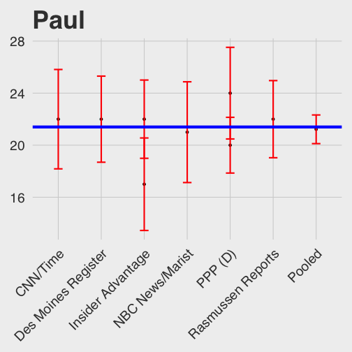
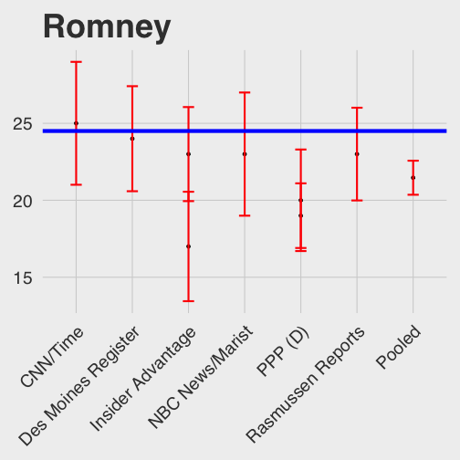
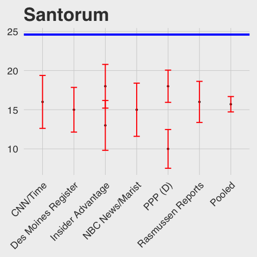
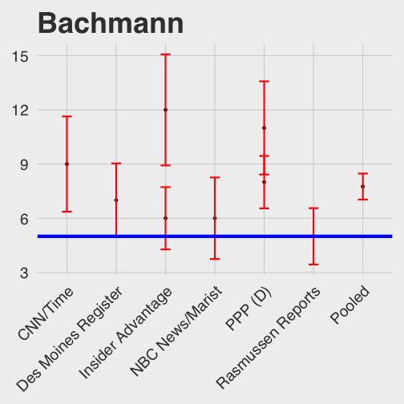
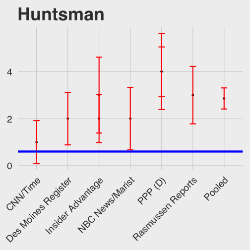
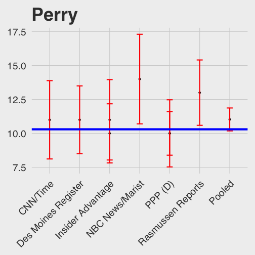
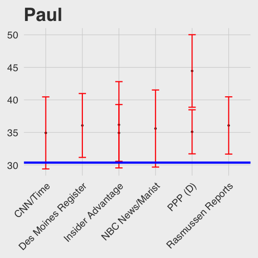
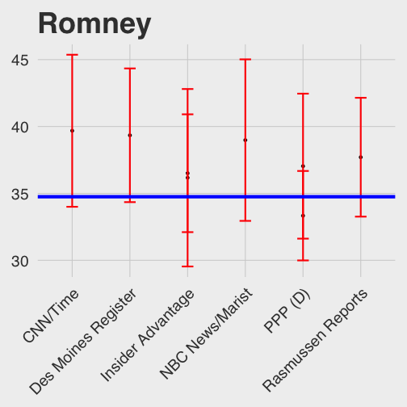
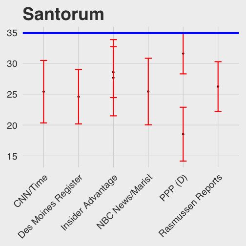

What do Iowa polls tell us?
Everyone is staring hard at the polls in Iowa and trying to predict who the winners will be. There are data gurus, there are journalists, and everyone in between. But are these Iowa polls that predictive? I decided to look at the polls 4 years ago. That, too was a hotly contested primary with about 4 people having a decent chance. They were Paul, Romney, Santorum, Gingrich. You can find the data here.
Just by looking at the data, you can see that most polls more than 10 days from the primary( the primary that year was on January 3rd) are way off. So, I decided to look at the polls within the last 10 days of the primary. This year, we are now entering that phase, basically telling us, that everythig we have been seeing till now might not be very predictive either. But, were even those polls close to the primary predictive enough. More precisely, if we consider the margin of error in these polls because of sample size, did they predict the actual outcome for any of the candidates?
The Data
library(xlsx)
## Loading required package: rJava
## Warning: package 'rJava' was built under R version 3.2.3
## Loading required package: xlsxjars
poll_raw <- read.xlsx("polls.xlsx",1)
head(poll_raw)
## Poll Date Sample Paul Romney Santorum Gingrich
## 1 Insider Advantage 1/1 - 1/1 729 LV 22 23 18 16
## 2 PPP (D) 12/31 - 1/1 1340 LV 20 19 18 14
## 3 Des Moines Register 12/27 - 12/30 602 LV 22 24 15 12
## 4 Rasmussen Reports 12/28 - 12/28 750 LV 22 23 16 13
## 5 NBC News/Marist 12/27 - 12/28 425 LV 21 23 15 13
## 6 CNN/Time 12/21 - 12/27 452 LV 22 25 16 14
## Perry Bachmann Huntsman Cain Spread
## 1 10 6 2 -- Romney +1
## 2 10 8 4 -- Paul +1
## 3 11 7 2 -- Romney +2
## 4 13 5 3 -- Romney +1
## 5 14 6 2 -- Romney +2
## 6 11 9 1 -- Romney +3
library(dplyr)
##
## Attaching package: 'dplyr'
##
## The following objects are masked from 'package:stats':
##
## filter, lag
##
## The following objects are masked from 'package:base':
##
## intersect, setdiff, setequal, union
poll_raw <- select(poll_raw, -Date,-Spread,-Cain)
poll_raw$Sample <- as.double(gsub("\\sLV$","",poll_raw$Sample))
actual <- c(Paul=21.4, Romney=24.5, Santorum=24.6, Ginrich=13.3, Perry=10.3, Bachmann=5.0, Huntsman=0.6)
pool <- dplyr::summarise(poll_raw,Poll="Pooled",Paul=sum(Sample*Paul)/sum(Sample),
Romney=sum(Sample*Romney)/sum(Sample), Santorum=sum(Sample*Santorum)/sum(Sample),
Gingrich=sum(Sample*Gingrich)/sum(Sample), Perry=sum(Sample*Perry)/sum(Sample),
Bachmann=sum(Sample*Bachmann)/sum(Sample),Huntsman=sum(Sample*Huntsman)/sum(Sample))
pool$Sample <- sum(poll_raw$Sample)
poll_raw <- rbind(poll_raw,pool)
We have done some data cleaning, and added one more row, corresponding to a pooled vote. You can think of the pooled vote as an aggregation of all the polls. If the people in all the polls were called into a single room (I am assuming different people were polled at each vote). Pooling should increase the sample size, and eliminate the bias of individual pollsters to some extent, unless the bias is similar for all of them. Let us see if this is indeed true.
print(poll_raw)
## Poll Sample Paul Romney Santorum Gingrich Perry
## 1 Insider Advantage 729 22.00000 23.00000 18.00000 16.0000 10.00000
## 2 PPP (D) 1340 20.00000 19.00000 18.00000 14.0000 10.00000
## 3 Des Moines Register 602 22.00000 24.00000 15.00000 12.0000 11.00000
## 4 Rasmussen Reports 750 22.00000 23.00000 16.00000 13.0000 13.00000
## 5 NBC News/Marist 425 21.00000 23.00000 15.00000 13.0000 14.00000
## 6 CNN/Time 452 22.00000 25.00000 16.00000 14.0000 11.00000
## 7 Insider Advantage 429 17.00000 17.00000 13.00000 17.0000 11.00000
## 8 PPP (D) 565 24.00000 20.00000 10.00000 13.0000 10.00000
## 9 Pooled 5292 21.22147 21.46504 15.70408 13.9624 11.02664
## Bachmann Huntsman
## 1 6.000000 2.000000
## 2 8.000000 4.000000
## 3 7.000000 2.000000
## 4 5.000000 3.000000
## 5 6.000000 2.000000
## 6 9.000000 1.000000
## 7 12.000000 3.000000
## 8 11.000000 4.000000
## 9 7.754913 2.857332
Polls for the top three candidates
candidate_plot <-function(poll_df, actual_vec, cand_name)
{
library(ggplot2)
library(ggthemes)
library(lazyeval)
library(dplyr)
cand_actual = as.numeric(actual_vec[cand_name])
mutate_call <- lazyeval::interp(~100.*1.96*sqrt( a/100.*(1.-a/100.)/b), a=as.name(cand_name), b=as.name("Sample"))
poll_df <- poll_df%>%mutate_(.dots=setNames(list(mutate_call),"err_bar"))
cand_plot <- ggplot(data=poll_df, environment=environment()) +geom_point(aes_string(x="Poll", y=cand_name)) +
geom_errorbar(aes_string(x="Poll",ymin = paste0(cand_name,"- err_bar"),
ymax= paste0(cand_name,"+ err_bar")), width=0.2, colour=2, size=1) +
geom_hline(aes(yintercept = cand_actual), colour="blue", size=2) +
labs(x="Poll Name", y=cand_name, title=cand_name) +
theme_fivethirtyeight(base_size=24)+theme(axis.text.x = element_text(angle = 45, hjust = 1))
return(cand_plot)
}
Paul_plot = candidate_plot(poll_raw, actual,"Paul")
## Warning: package 'ggplot2' was built under R version 3.2.3
## Warning: package 'ggthemes' was built under R version 3.2.3
print(Paul_plot)

Romney_plot = candidate_plot(poll_raw, actual,"Romney")
print(Romney_plot)

Santorum_plot = candidate_plot(poll_raw, actual,"Santorum")
print(Santorum_plot)

The polls did a good job only for Ron Paul. For Romney, many polls were within a margin of error, and the pooled poll underestimates Romney's support. In the case of Santorum (who actually won the Caucus), the polls are waay off! Every poll has underestimated Santorum. The pooled poll shows him at 15.7, about 9 points away from his final support! That basically says, add or substract 9 points of error margin to the polls that you see today, if 2012 is still the state-of-the-art in terms of polls. Well, that kind of answers our question. These polls aren't doing a good job. However, they are still good at identifying the top three people.
But there is another interesting trend. Except for Ron Paul, the polls underestimate the support for the two leading candidates. Why is that? My guess would be that this is because it overestimates the support for the other candidates. Starting from 10 days before the polls, slowly, public opinion converged, and people who were considering candidates like Bachmann etc. realized that they are not going to waste their vote on a candidate who is most likely to lose. Support slowly consolidated to the top three candidates.
This time again, a similar thing is probably going to happen. Whoever wins, I think slowly support will be consolidated towards Trump, Cruz and probably Rubio, and the rest of the candidates should see a clear decline in poll numbers. Let us look at some of the worst performing candidates to see how their numbers were overestimated.
Polls for the other candidates
Bachmann_plot = candidate_plot(poll_raw, actual,"Bachmann")
print(Bachmann_plot)

Huntsman_plot = candidate_plot(poll_raw, actual,"Huntsman")
print(Huntsman_plot)

Perry_plot = candidate_plot(poll_raw, actual,"Perry")
print(Perry_plot)

The support for both Huntsmann and Bachmann are severely overestimated. The pooled plot for them clearly shows that the polls did not do a good job for them. So why did the polls do a good job in predicting Ron Paul? Probably because Paul has a dedicated set of supporters who are not ones who change their minds. The people who changed their minds mostly went to Santorum. This was probably evangelical support slipping away from Bachmann, and progressive support going to Romney. Paul's supporters are a liberterian group, who have a very fixed ideology. So therefore, what really causes these polls to go bad is the fact that most people make up/change their mind at the end, and move from flirting with unwinnable candidates to more pragmatic choices.
A perhaps better way of looking at the polls
So, lets delete the people who never made it, and see if the polls do a better job at predicting the cage match between the top three candidates. There will be some sleight of hand to normalize everything including the sample size for the polls. We will only consider the people who chose the top 3 candidates.
poll_three = dplyr::select(poll_raw,Poll,Sample, Paul, Romney, Santorum)
poll_three = dplyr::mutate(poll_three, total = Paul+Romney+Santorum)
poll_three = dplyr::mutate(poll_three, Sample = Sample*total/100., Romney = Romney*100/total,
Paul = Paul*100/total, Santorum = Santorum*100/total)
poll_three = dplyr::filter(poll_three,Poll!="Pooled")%>%select(-total)
print(poll_three)
## Poll Sample Paul Romney Santorum
## 1 Insider Advantage 459.27 34.92063 36.50794 28.57143
## 2 PPP (D) 763.80 35.08772 33.33333 31.57895
## 3 Des Moines Register 367.22 36.06557 39.34426 24.59016
## 4 Rasmussen Reports 457.50 36.06557 37.70492 26.22951
## 5 NBC News/Marist 250.75 35.59322 38.98305 25.42373
## 6 CNN/Time 284.76 34.92063 39.68254 25.39683
## 7 Insider Advantage 201.63 36.17021 36.17021 27.65957
## 8 PPP (D) 305.10 44.44444 37.03704 18.51852
#make sure this is 100
#poll_three$Paul+poll_three$Romney + poll_three$Santorum
actual_three = actual[c("Paul","Romney","Santorum")]
actual_three =actual_three*100/sum(actual_three)
print(actual_three)
## Paul Romney Santorum
## 30.35461 34.75177 34.89362
Okay, so, now we have basically normalized everything as a "cage match"(the term Cruz loves to use) between the three. Here is how the polls now shape up, for the three candidates
Paul_plot3 = candidate_plot(poll_three, actual_three,"Paul")
print(Paul_plot3)

Romney_plot3 = candidate_plot(poll_three, actual_three,"Romney")
print(Romney_plot3)

Santorum_plot3 = candidate_plot(poll_three, actual_three,"Santorum")
print(Santorum_plot3)
 Well, we now have the polls slightly overpredicting Romney and Paul, and still underpredicting Santorum. Hoever, notice that almost every poll is now grazing the margin for Romney and Paul, and there is one poll which is within the error bars for Santorun. Which one is this? The late PPP poll (12/31-1/1) with 1340 respondents. This is the poll which has the highest sample size and is within three days of when Iowa went to the polls. This poll does a good job for all three candidates(slightly missing the mark for Paul). So therefore, this is a kind of poll I would look forward to.
In conclusion, take all these Iowa polls and their wild fluctuations with many pinches of salt. People have just started making up their mind and consolidating. If you want a predictive poll, I would look for one about 3/4 days from Iowa caucus, with a large sample size (perhaps PPP will do another one this time), and then look at the top 3 candidates there (which will, in all probability be Trump-Cruz-Rubio). Ignore everyone else, because people will not vote for "losers", as Trump would say.